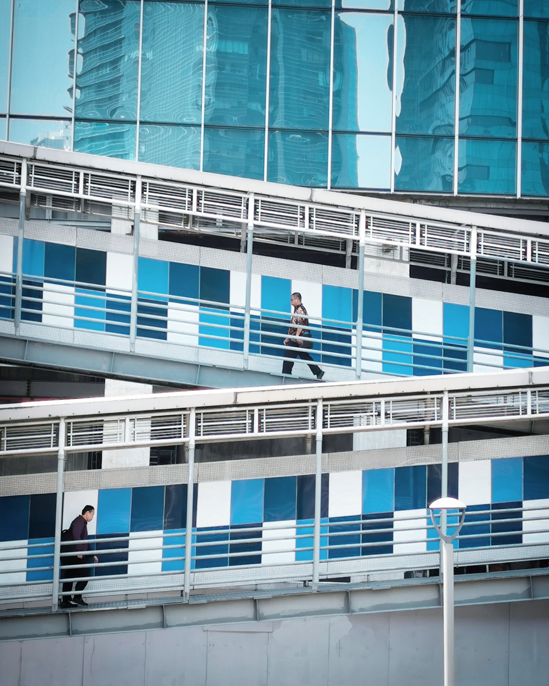
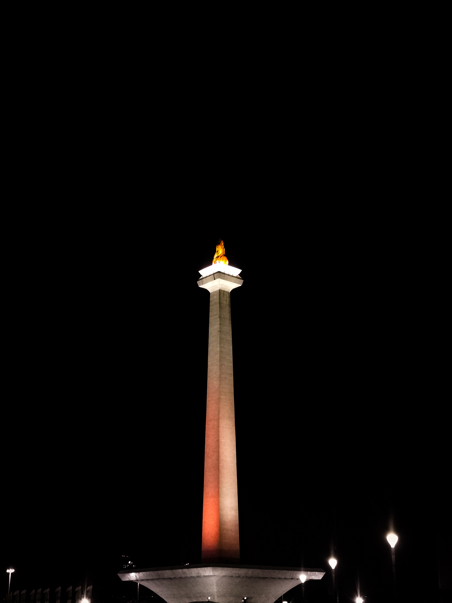
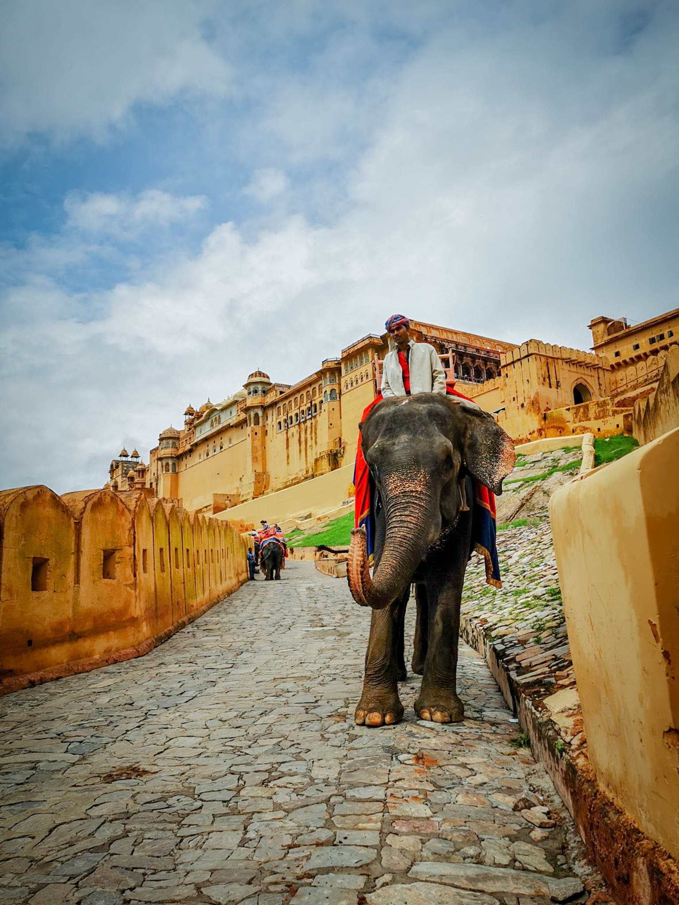
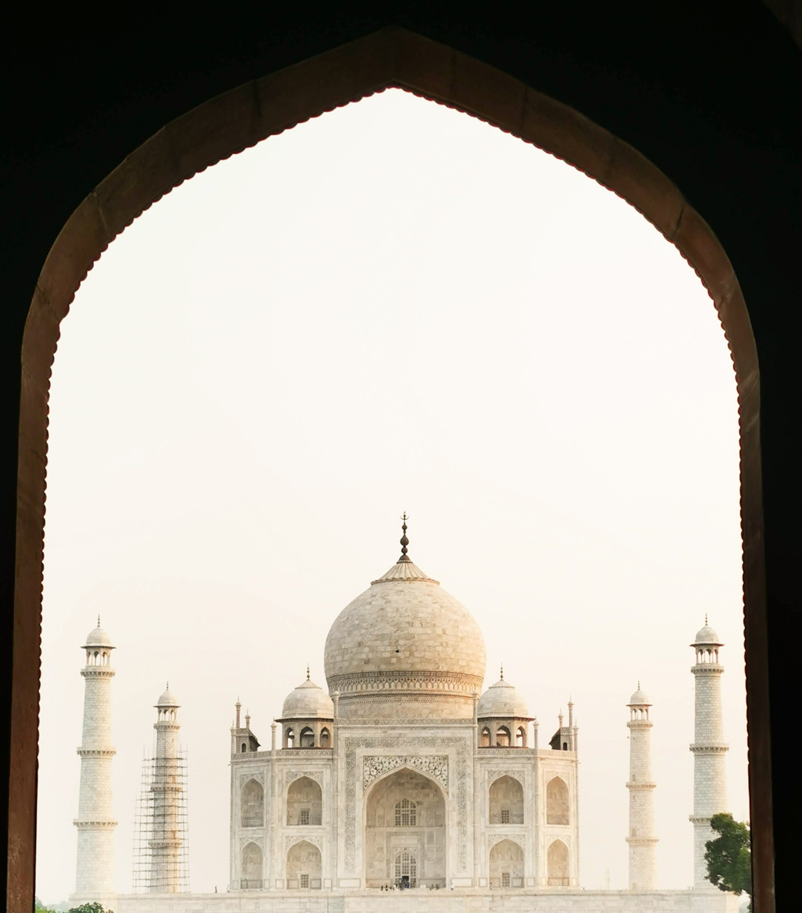
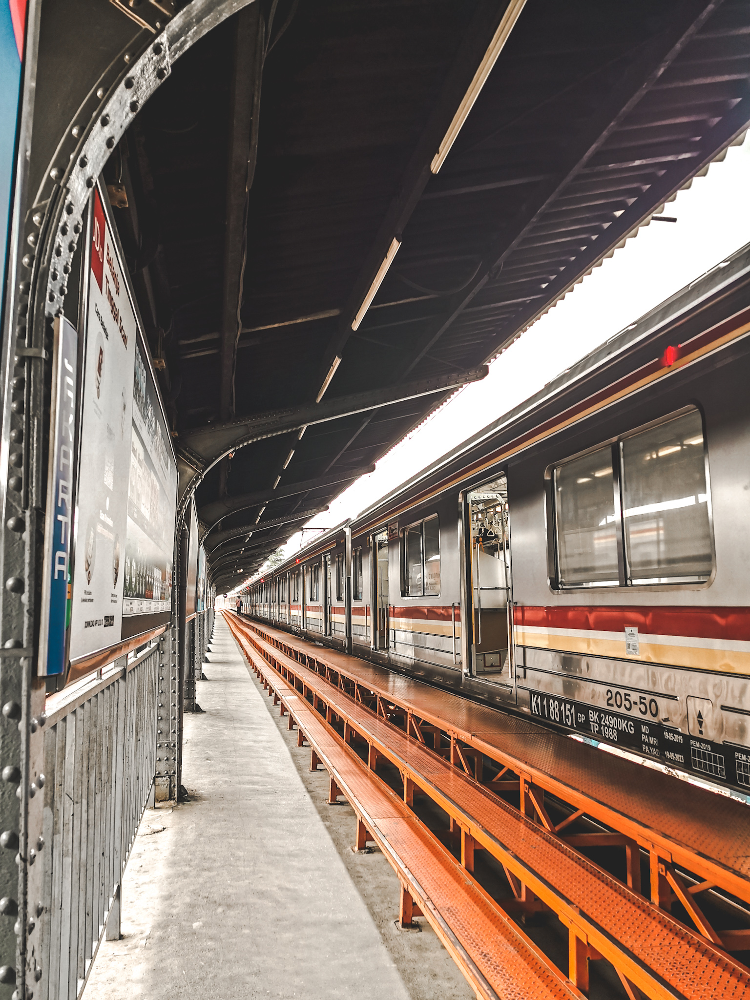
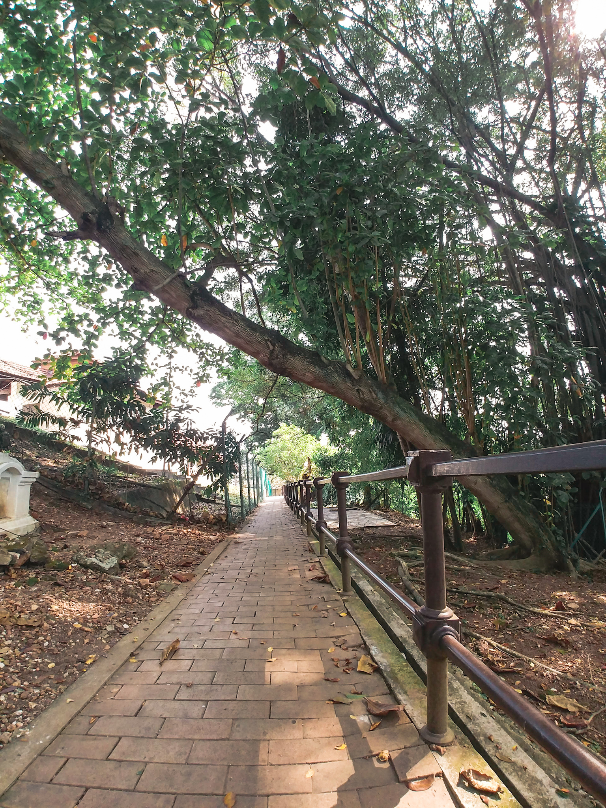
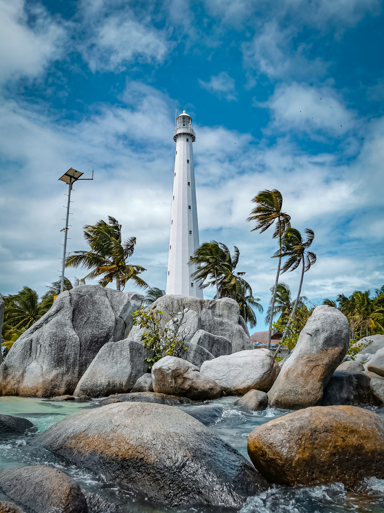

PREFACE
Two-way Street
Welcome to my very first website. To start, I would like to share to you the list of the things I interested in :
- Reading self-improvement book
I believe the only person who knows yourself better is none other than YOU! So I decided to learn from someone's experience and apply whatever relevant to the situation I am in.
- Spiritual fulfilment, including meditation and breathing exercise
I am still learning to be the best version of myself, and being close to God I believed in is the absolute way to get there. I believe, all the things happen in this universe is related to each other.
- low-pace home workout
Simply because I'm easy-to-give-up person haha. By doing low-pace execise at home, I can minimize the movement, so that I don't have any excuses to not maintain my physical health
- Experiencing new thing
A pinch of salt won't ruin your life, right?
- Sleep!
NO EXPLANATION HAHA!
Aside from that, in this special post, I want to let you know that I am also an amateur photographer. All of these pictures below are taken using my smartphone. I am still working on my editing skill. Let me know what you think about it.
- Two-way Street (Jakarta, Indonesia)

- Tall and Shine (Jakarta, Indonesia)

- Prince Ali of Ababwa (Jaipur, India)

- Gate of The World

- The Most Famous (Agra, India)

- Welcoming Haze (Jakarta, Indonesia)

- Early Train (Jakarta, Indonesia)

- Eazy Breezy (Malacca, Malaysia)

- 24/7 (Belitung, Indonesia)
